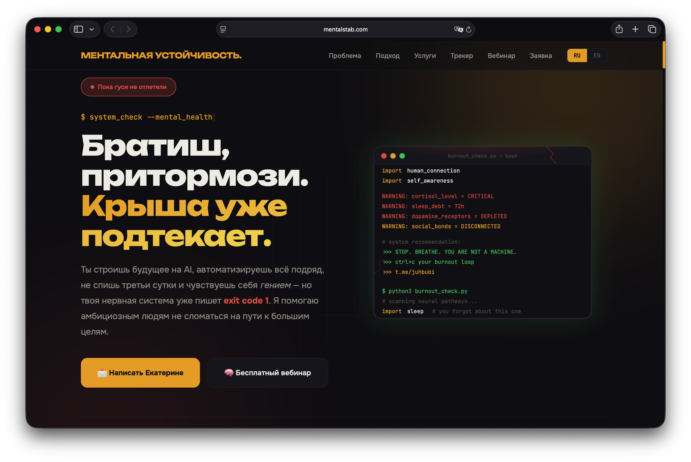

Тексты для публикации 16 марта 2026 | Каждый пост требует утверждения
Что сделано (Спринты 1-3)
HTTPS — mentalstab.com работает, HTTP редиректит на HTTPS
Форма — E2E тест пройден, лид #4 создан, CORS для mentalstab.com добавлен
Umami — tracking script установлен, website_id создан, данные идут в дашборд
Дашборд — вкладка "Веб-трафик" добавлена в Zinin Corp Analytics
Екатерина — сообщение отправлено (нажать /start в @mental_stability_leads_bot)
UX — favicon, og-meta, навигация почищена, mobile ОК

— посты для утверждения —
Ожидает
TelegramRU
Запустил проект, который давно хотел сделать.
Современные LLM вышли на такой уровень, что целые отрасли вынуждены переквалифицироваться. Прямо сейчас огромное количество людей не спит ночами, строит новые проекты, тупит в Claude Code и Codex. Вайб-кодинг стал образом жизни.
Но у нашей психики есть ограниченный ресурс. Каждый промпт - это микродоза дофамина. Каждый удачный ответ ИИ подкрепляет цикл. И в какой-то момент ты просто перестаёшь замечать, что кофе больше не бодрит, что ты не помнишь, когда последний раз хотел чего-то просто так, что люди вокруг стали раздражать.
Чтобы не сойти с ума от всего этого, часто нужна поддержка и возможность поговорить со специалистом.
Екатерина Чернецова - психолог, 12+ лет практики, подход Family Systems (IFS). Специализируется именно на работе с вайб-кодерами и теми, кто посвящает свою жизнь работе с AI-инструментами.
Мы запустили mentalstab.com - сайт, где можно узнать больше и написать Екатерине.
mentalstab.com
Современные LLM вышли на такой уровень, что целые отрасли вынуждены переквалифицироваться. Прямо сейчас огромное количество людей не спит ночами, строит новые проекты, сидит в Claude Code и Codex. Вайб-кодинг стал образом жизни для тысяч людей.
Но у нашей психики есть ограниченный ресурс. Каждый промпт - микродоза дофамина. Каждый удачный ответ ИИ подкрепляет цикл. В какой-то момент перестаёшь замечать, что кофе больше не бодрит, что люди вокруг начали раздражать, что ты давно живёшь на автопилоте.
Чтобы не сойти с ума от всего этого, иногда нужна поддержка и возможность поговорить со специалистом.
Екатерина Чернецова - психолог, 12+ лет практики, подход Family Systems (IFS). Специализируется именно на работе с вайб-кодерами и теми, кто посвящает свою жизнь работе с AI.
Мы запустили mentalstab.com - подробности и контакт Екатерины.
#mentalhealth #vibecoding #ai #claudecode #psychology
Запустил mentalstab.com
LLM перевернули индустрию. Целые профессии переквалифицируются. Люди ночами сидят в Claude Code, строят проекты, вайб-кодят.
Наша психика при этом имеет ограниченный ресурс. И чтобы не сойти с ума, иногда нужно просто поговорить со специалистом.
Екатерина Чернецова - психолог, 12+ лет, подход Family Systems. Специализируется на работе с вайб-кодерами.
Написать ей можно через mentalstab.com
Сделал проект, которого мне самому не хватало.
Современные LLM перевернули всё. Целые отрасли вынуждены переквалифицироваться. Куча людей прямо сейчас не спит ночами, вайб-кодит в Claude Code, строит проекты на AI.
Но наша психика имеет ограниченный ресурс. Каждый промпт - микродоза дофамина, каждый удачный ответ подкрепляет цикл. В какой-то момент перестаёшь замечать, что тебя уже давно штормит.
Чтобы не сойти с ума от всего этого, нужна поддержка.
Екатерина Чернецова - психолог, 12+ лет практики, подход Family Systems (IFS). Специализируется на работе с вайб-кодерами и теми, кто живёт в мире AI.
Подробности и контакт: mentalstab.com
Запустил проект mentalstab.com - ментальная устойчивость для тех, кто живёт в мире AI.
LLM вышли на такой уровень, что целые отрасли переквалифицируются. Огромное количество людей прямо сейчас ночами сидит в Claude Code и Codex, строит проекты, вайб-кодит.
Наша психика при этом имеет ограниченный ресурс. Каждый промпт - дофамин. Каждый удачный ответ - подкрепление цикла. Кофе перестаёт бодрить. Люди начинают раздражать. Ты перестаёшь замечать, что давно живёшь на автопилоте.
Чтобы не сойти с ума, нужна поддержка.
Екатерина Чернецова - психолог, 12+ лет, подход Family Systems (IFS). Специализируется именно на работе с вайб-кодерами.
mentalstab.com
Launched mentalstab.com - mental resilience for people living in the age of AI.
LLMs have reached a level where entire industries are reskilling. People are grinding Claude Code and Codex all night, vibe coding their way through new projects. Our minds have a limited capacity for this.
Ekaterina Chernetsova - psychologist, 12+ years, Family Systems approach. Specializes in working with vibe coders.
mentalstab.com
Mental Resilience for Vibe Coders
I launched mentalstab.com - a project about mental resilience for people who build with AI.
Modern LLMs have reached a level where entire industries are forced to reskill. Right now, a massive number of people are staying up all night, grinding in Claude Code and Codex, vibe coding new projects into existence.
But our minds have a limited capacity. Every prompt is a micro-dose of dopamine. Every successful AI response reinforces the loop. At some point you stop noticing that you haven't slept properly in weeks, that coffee just removes the headache, that you can't remember the last time you wanted something just because.
To stay sane through all of this, sometimes you just need to talk to someone who gets it.
Ekaterina Chernetsova - psychologist, 12+ years, Family Systems (IFS). She specializes in working with vibe coders and people who dedicate their lives to building with AI.
mentalstab.com
LLM перевернули всё. Целые профессии переквалифицируются. Люди ночами вайб-кодят в Claude Code, строят проекты, живут в терминале.
Наша психика при этом имеет ограниченный ресурс. Каждый промпт - дофамин. Кофе перестаёт бодрить. Люди начинают раздражать. Ты перестаёшь замечать, что давно на автопилоте.
Чтобы не сойти с ума, нужна поддержка.
Екатерина Чернецова - психолог, 12+ лет, Family Systems. Специализируется на работе с вайб-кодерами.
Подробности - ссылка в шапке профиля.
#mentalhealth #vibecoding #ai #claudecode #burnout #psychology #вайбкодинг #ментальноездоровье
* Instagram: ссылки в caption некликабельны. Нужно обновить ссылку в шапке профиля на UTM-ссылку выше.
Ожидает
MastodonEN
Launched mentalstab.com - mental resilience for vibe coders.
LLMs changed everything. People are grinding Claude Code all night, building projects, living in the terminal. Our minds have a limited capacity for this.
Ekaterina Chernetsova - psychologist, 12+ years, Family Systems. Specializes in working with vibe coders.
mentalstab.com
#mentalhealth #vibecoding #ai #psychology
mentalstab.com - mental resilience for vibe coders
Modern LLMs changed everything. Entire industries reskilling. People grinding Claude Code and Codex all night. Vibe coding became a lifestyle.
Our minds have a limited capacity. Every prompt is dopamine. At some point you stop noticing you're running on fumes.
Ekaterina Chernetsova - psychologist, 12+ years, Family Systems. Specializes in working with vibe coders and AI builders.
mentalstab.com
Запустил проект mentalstab.com
Современные нейросети вышли на такой уровень, что целые профессии переквалифицируются. Огромное количество людей прямо сейчас ночами сидит в AI-инструментах, строит проекты, осваивает вайб-кодинг.
Но наша психика имеет ограниченный ресурс. Чтобы не сойти с ума от всего этого, иногда нужна поддержка.
Екатерина Чернецова - психолог, 12+ лет практики, подход Family Systems. Специализируется на работе с теми, кто живёт в мире AI.
Подробности: mentalstab.com
Launched mentalstab.com - mental resilience for vibe coders and AI builders.
LLMs are forcing entire industries to reskill. People are grinding Claude Code all night building new projects. Our minds have a limited capacity for this kind of sustained intensity.
Ekaterina Chernetsova - psychologist, 12+ years, Family Systems approach. Specializes in working with vibe coders.
mentalstab.com
mentalstab.com - mental resilience for vibe coders.
LLMs changed the game. People grinding Claude Code all night. Our psyche has limits.
Ekaterina Chernetsova - psychologist, 12+ years, Family Systems. Works with vibe coders.
mentalstab.com
Mental Resilience for Vibe Coders
I launched mentalstab.com - a project about mental resilience for people who build with AI.
Modern LLMs have reached a level where entire industries are forced to reskill. Right now, a massive number of people are staying up all night, grinding in Claude Code and Codex, vibe coding new projects into existence.
But our minds have a limited capacity. Every prompt is a micro-dose of dopamine. Every successful AI response reinforces the loop. At some point you stop noticing that you haven't slept properly in weeks, that coffee just removes the headache, that you can't remember the last time you wanted something just because.
To stay sane through all of this, sometimes you just need to talk to someone who gets it.
Ekaterina Chernetsova - psychologist, 12+ years, Family Systems (IFS). She specializes in working with vibe coders and people who dedicate their lives to building with AI.
mentalstab.com